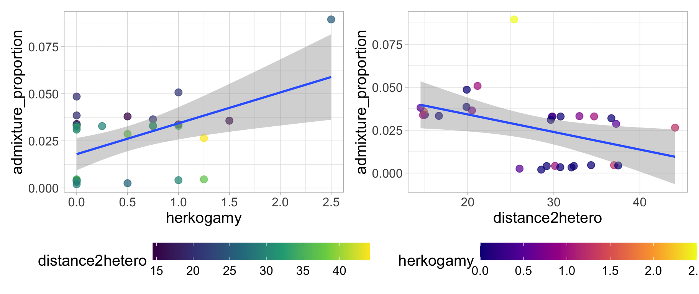
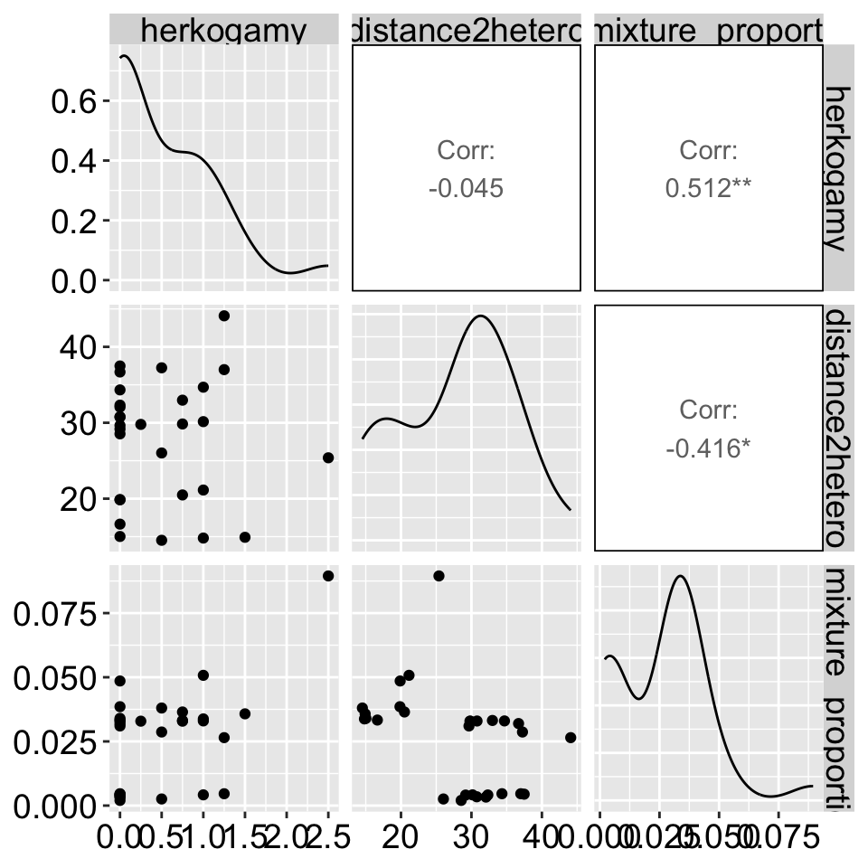
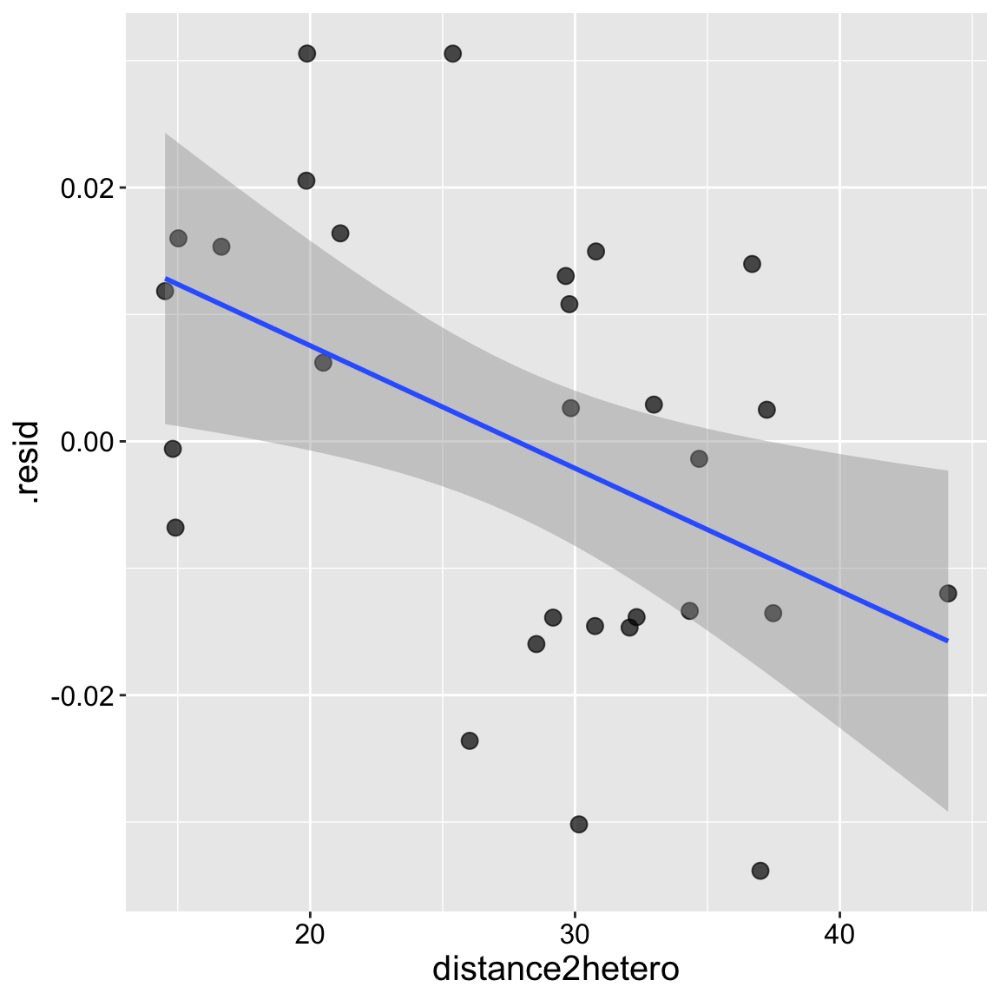
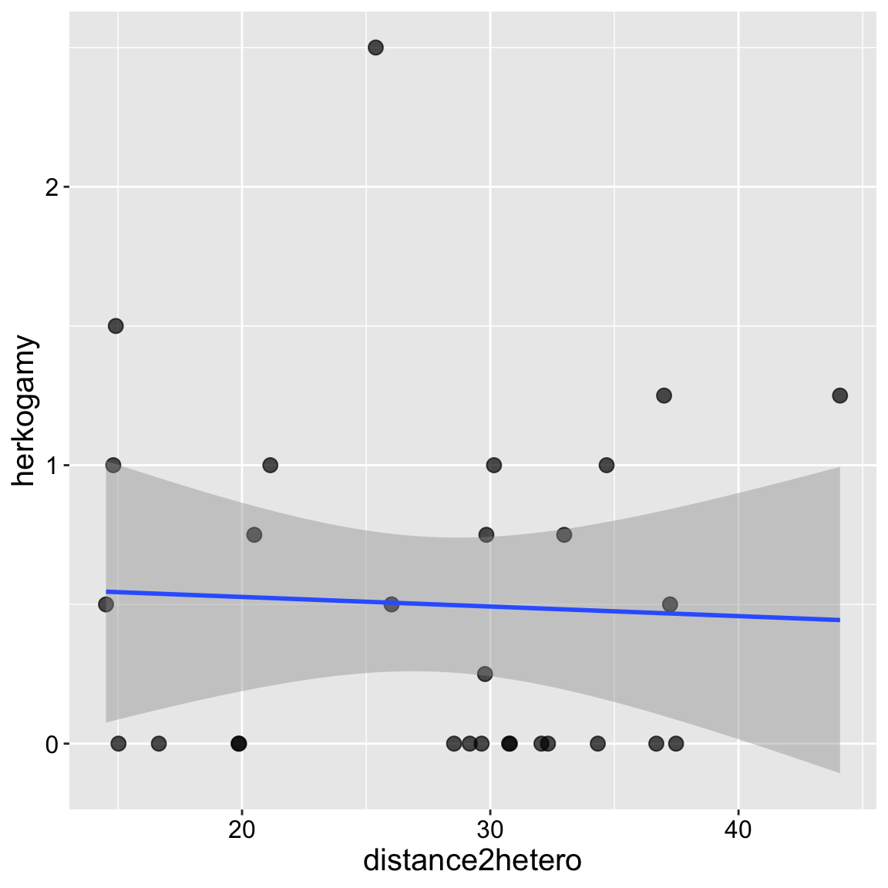
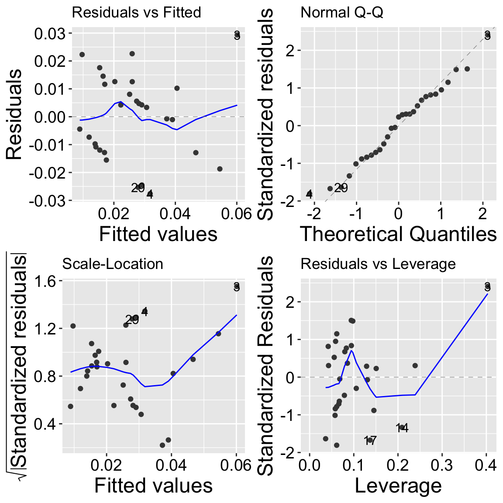
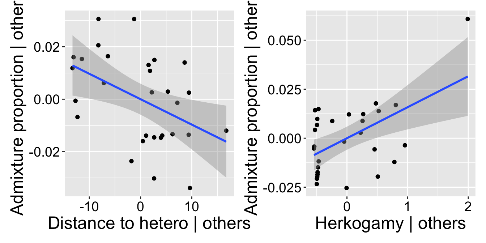

22. Multiple Regression
Motivating Scenario:
We have numerous continuous explanatory variables and aim to develop a comprehensive model.
Learning Goals: By the end of this chapter, you should be able to:
- Write and interpret linear models with two predictors.
- Conduct and interpret a polynomial regression in R.
- Conduct and interpret two-factor ANOVAs in R.
- Calculate Type I sums of squares.
- Calculate Type II sums of squares.
Review of Linear Models
A linear model predicts the response variable, \(\widehat{Y_i}\), by summing all components of the model:
\[\hat{Y_i} = a + b_1 y_{1,i} + b_2 y_{2,i} + \dots{}\]
Linear Models We Have Covered
- One-sample t-tests: \(\widehat{Y} = \mu\)
- Two-sample t-tests: \(\widehat{Y_i} = \mu + A_i\) (\(A_i\) can take one of two values)
- ANOVA: \(\widehat{Y_i} = \mu + A_i\) (\(A_i\) can take one of more than two values)
- Regression: \(\widehat{Y_i} = \mu + X_i\) (\(X_i\) is continuous)
- Polynomial Regression: \(\widehat{Y_i} = \mu + X_i + X_i^2\) (\(X_i\) is continuous)
- ANCOVA: \(\widehat{Y_i} = \mu + X_{1,i} + X_{2,i}\) (\(X_{1,i}\) is categorical, \(X_{2,i}\) is continuous)
Test Statistics for a Linear Model
- The \(t\) value shows how many standard errors an estimate is from its null value.
- The \(F\) value quantifies the ratio of variation in the response variable associated with a focal explanatory variable (\(MS_{model}\)), relative to the variation not attributable to this variable (\(MS_{error}\)).
Assumptions of a Linear Model
Linear models rely on the following assumptions:
- Linearity: The observations are appropriately modeled by summing all predictions in our equation.
- Homoscedasticity: The variance of residuals is constant across values of the predicted value, \(\hat{Y_i}\).
- Independence: Observations are independent of one another (aside from the model’s predictors).
- Normality: Residuals are normally distributed.
- Unbiased Data Collection: Data should be collected without bias.
Multiple regression
In the previous section we saw a “polynomial regression”. In a way, a polynomial regression is a special type of multiple regression – we are predicting our continuous response variable as a function of two continuous predictors.
Of course it’s only one predictor variable - but we consider its value and its squared value.
We also are often interested in predicting a continuous response from two (or more) different explanatory variables.
\[\begin{equation} \widehat{Y_i} = a + b_1 \times y_{1,i} + b_2 \times X_{2,i}\\ \\ \end{equation}\]
Multiple Regression Assumptions
Multiple regression models follow the same assumptions as any linear model:
- Homoscedasticity: The variance of residuals is constant across all levels of the predicted value, \(\hat{Y_i}\), meaning it remains consistent regardless of the values of the predictors.
- Independence: Observations are independent of each other, except as influenced by the predictors included in the model.
- Normality: Residuals are normally distributed.
- Unbiased Data Collection: Data are collected without systematic bias.
When we have more than one explanatory variable in our model (e.g., in a two-way ANOVA, ANCOVA, multiple regression, etc.), linear models additionally assume:
- Linearity: Observations are appropriately modeled by the sum of all predictions in the equation.
- Limited Multicollinearity: Predictor variables are not highly correlated; otherwise, interpreting estimates becomes challenging (more on this later).
Multiple Regression Example: Admixed Clarkia
Here, I present a snapshot of some ongoing research we are working on with collaborators Dave Moeller, Shelly Sianta, and Brooke Kern.
Over the past twenty years, research in speciation genomics has revealed that gene flow between sister taxa is quite common. We are investigating what factors influence the extent of gene flow between two sister species of Clarkia xantiana: Clarkia xantiana xantiana and Clarkia xantiana parviflora (hereafter referred to as xan and parv). These taxa show an interesting difference in reproductive biology:
- xan predominantly outcrosses, meaning it receives pollen from other individuals of the same (or even different) species.
- parv predominantly self-fertilizes, where one individual often pollinates itself.
Our study focuses on understanding what influences the amount of gene flow we observe. Specifically, we are interested in whether differences in traits within parv associated with its self-fertilization tendency (e.g., petal area, petal color, herkogamy—the distance between a flower’s male and female parts) impact the extent of gene flow. Additionally, we are curious to see if proximity to the other species (xan) increases gene flow.
To explore these questions, we sequenced the genomes of a number of plants, noting their collection locations and key phenotypic traits. Here, we will focus on parviflora plants from one population (Site 22) and examine:
Whether physical distance between a parviflora plant and the nearest xantiana plant influences the extent of admixture (i.e., the proportion of its genome derived from xantiana).
Whether herkogamy, the distance between male (anther) and female (stigma) parts, influences the extent of admixture. Our underlying biological idea is – if you’re fertilizing yourself you cannot be fertilized by the other species.

The data
The data are available here. A quick plot shows that
- The admixture proportion appears to decrease as plants are further from the other species and
- The admixture proportion appears to increase as stigma are further from anthers
clarkia_link <- "https://raw.githubusercontent.com/ybrandvain/datasets/refs/heads/master/clarkia_admix_S22P.csv"
clarkia <- read_csv(clarkia_link)
a <- ggplot(clarkia,aes(x = herkogamy, y = admixture_proportion, color = distance2hetero))+
geom_point(size = 3, alpha = .72)+
geom_smooth(method = "lm") + scale_color_viridis_c(option = "viridis")+ theme_light()+ theme(axis.text = element_text(size = 12),axis.title = element_text(size = 15), legend.text = element_text(size = 12),legend.title = element_text(size = 15), legend.position = "bottom",legend.key.width = unit(1.5, "cm") )
b <- ggplot(clarkia,aes(x = distance2hetero, y =admixture_proportion, color = herkogamy))+
geom_point(size = 3, alpha = .72)+
geom_smooth(method = "lm") + scale_color_viridis_c(option = "plasma")+ theme_light()+ theme(axis.text = element_text(size = 12),axis.title = element_text(size = 15), legend.text = element_text(size = 12),legend.title = element_text(size = 15), legend.position = "bottom",legend.key.width = unit(1.5, "cm") )
a+b
Or you can look at a bunch at once with the ggpairs() function in the GGally package.
library(GGally)
ggpairs(clarkia)
Modeling Residuals
One way to approach multiple regression (especially when using Type II sums of squares, as discussed below) is by aiming to model the variation in each trait after accounting for the influence of the other. For example, if we’re interested in the effect of herkogamy on admixture while accounting for the effect of distance2hetero, we can model the residuals from a model of Admixture = f(distance2hetero) as a function of herkogamy (and vice versa).
model_distance2hetoro <- lm(admixture_proportion ~ distance2hetero, data = clarkia)
augment(model_distance2hetoro)%>%
mutate(herkogamy = pull(clarkia, herkogamy)) %>%
ggplot(aes(x = herkogamy, y = .resid))+
geom_point(size= 3, alpha = .7)+
geom_smooth(method = "lm") + theme(axis.text = element_text(size = 12),axis.title = element_text(size = 15))
augment(model_distance2hetoro)%>%
mutate(herkogamy = pull(clarkia, herkogamy)) %>%
lm(.resid ~ herkogamy, data = .)%>%
tidy() %>% mutate_at(2:5, round, digits =4) %>% kbl()| term | estimate | std.error | statistic | p.value |
|---|---|---|---|---|
| (Intercept) | -0.0079 | 0.0037 | -2.125 | 0.0429 |
| herkogamy | 0.0158 | 0.0047 | 3.360 | 0.0023 |
model_herkogamy <- lm(admixture_proportion ~ herkogamy, data = clarkia)
augment(model_herkogamy)%>%
mutate(distance2hetero = pull(clarkia,distance2hetero)) %>%
ggplot(aes(x = distance2hetero, y = .resid))+
geom_point(size= 3, alpha = .7)+
geom_smooth(method = "lm") + theme(axis.text = element_text(size = 12),axis.title = element_text(size = 15))
augment(model_herkogamy)%>%
mutate(distance2hetero = pull(clarkia, distance2hetero)) %>%
lm(.resid ~ distance2hetero, data = .)%>%
tidy() %>% mutate_at(2:5, round, digits =4) %>% kbl()| term | estimate | std.error | statistic | p.value |
|---|---|---|---|---|
| (Intercept) | 0.0269 | 0.0105 | 2.5720 | 0.0159 |
| distance2hetero | -0.0010 | 0.0004 | -2.6752 | 0.0125 |
Building and evaluating our multiple regression model
Rather than modeling these pieces separately, multiple regression allows us to jointly model the influence of two continuous explanatory predictors on a continuous response variable. We can build this in R as we’re accustomed to:
model_dist2_herk <- lm(admixture_proportion ~ distance2hetero + herkogamy, data = clarkia)Evaluating assumptions
Multicollinearity
Let’s first check for multicollinearity. Remember, it’s difficult to interpret a multiple regression model if the explanatory variables are correlated. Fortunately, in this case, they appear to be independent! We have three pieces of evidence:
- The correlation is weak,
- There is no obvious pattern in the plot
- The variance inflation factor (a measure of multicolinearity) is small (it is approximately 1 which means theres no correlation). We get a bit worried when it is more than 5 and very worried when it is more than 10)!
library(car)
clarkia %>%
summarise(cor_herk_dist = cor(herkogamy,distance2hetero))# A tibble: 1 × 1
cor_herk_dist
<dbl>
1 -0.0448ggplot(clarkia, aes(x = distance2hetero, y = herkogamy))+
geom_point(size= 3, alpha = .7)+
geom_smooth(method = "lm") + theme(axis.text = element_text(size = 12),axis.title = element_text(size = 15))
car::vif(model_dist2_herk)distance2hetero herkogamy
1.002007 1.002007 Residual variation
Our model diagnostics look pretty good. Points are all largely on the qq line, the value and the absolute value of residuals are largely independent of predictors. So, lets get to work!
autoplot(model_dist2_herk)
Estimation
emtrends(model_dist2_herk,var = "herkogamy")%>%
summary(infer = c(TRUE, TRUE)) %>% select(herkogamy, lower.CL, upper.CL ) %>% mutate_all(round,digits=5)%>% kbl()| herkogamy | lower.CL | upper.CL |
|---|---|---|
| 0.5 | 0.00597 | 0.02565 |
emtrends(model_dist2_herk,var = "distance2hetero")%>%
summary(infer = c(TRUE, TRUE)) %>% select(distance2hetero.trend, lower.CL, upper.CL ) %>% mutate_all(round,digits=5)%>% kbl()| distance2hetero.trend | lower.CL | upper.CL |
|---|---|---|
| -0.00097 | -0.00173 | -0.00021 |
Types of sums of squares.
By default, the anova() function uses Type I Sums of Squares, which we introduced earlier. Remember, with Type I Sums of Squares, you calculate the sums of squares for the first predictor by fitting a model with only that predictor. Then, to find the sums of squares for the second predictor, you subtract the sums of squares from the first predictor’s model from the sums of squares of a model including both predictors. This means the order in which predictors are entered into the model affects the results. I demonstarted this below
lm(admixture_proportion ~ distance2hetero + herkogamy, data = clarkia) %>%
anova()Analysis of Variance Table
Response: admixture_proportion
Df Sum Sq Mean Sq F value Pr(>F)
distance2hetero 1 0.0019218 0.00192177 7.7233 0.009991 **
herkogamy 1 0.0027128 0.00271278 10.9023 0.002796 **
Residuals 26 0.0064695 0.00024883
---
Signif. codes: 0 '***' 0.001 '**' 0.01 '*' 0.05 '.' 0.1 ' ' 1lm(admixture_proportion ~ herkogamy + distance2hetero , data = clarkia) %>%
anova()Analysis of Variance Table
Response: admixture_proportion
Df Sum Sq Mean Sq F value Pr(>F)
herkogamy 1 0.0029154 0.00291536 11.7164 0.002062 **
distance2hetero 1 0.0017192 0.00171919 6.9092 0.014204 *
Residuals 26 0.0064695 0.00024883
---
Signif. codes: 0 '***' 0.001 '**' 0.01 '*' 0.05 '.' 0.1 ' ' 1This ordering is ok if we’re dealing with a covariate we don’t care much about. However, it’s not ideal for testing interesting biological models, as we don’t want our answers to depend on the order things went into lm().
Type II sums of squares are usually better
In contrast, Type II Sums of Squares calculates the sums of squares for each factor after accounting for the other factor. It’s as if both factors are treated as the “second” predictor in a Type I Sums of Squares model. That is, each factor’s effect is measured independently of the order in which they are entered. We can calculate type II sums of squares with the Anova() function in the cars package:
lm(admixture_proportion ~ distance2hetero + herkogamy, data = clarkia) %>%
Anova(type = "II")Anova Table (Type II tests)
Response: admixture_proportion
Sum Sq Df F value Pr(>F)
distance2hetero 0.0017192 1 6.9092 0.014204 *
herkogamy 0.0027128 1 10.9023 0.002796 **
Residuals 0.0064695 26
---
Signif. codes: 0 '***' 0.001 '**' 0.01 '*' 0.05 '.' 0.1 ' ' 1Note that our entries both match the results when each was second in a Type I sums of squares model.
Visualizing multiple regression: Added Variable plots
Visualizing multivariate relationships can be challenging. Above, we explored a few approaches to address this. For example, in our first plot, we placed the response variable (admixture proportion) on the y-axis, one explanatory variable on the x-axis, and represented another explanatory variable using color. However, this approach can be difficult to interpret. To provide a more comprehensive view, we used a ggpairs plot to display all combinations of pairwise relationships, as well as residual plots.
Here, I introduce the added variable plot (AV plot). An AV plot is similar to a residual plot. On the y-axis, it shows the residuals from a model where the response is predicted by all variables except the focal predictor (the explanatory variable of interest). The x-axis displays the residuals of the focal predictor after it has been modeled as a function of all other predictors. This plot allows us to visualize the unique contribution of the focal predictor to the response, independent of the other variables in the model.
a <- tibble(
resid_y = lm(admixture_proportion ~ herkogamy, data = clarkia) %>% augment() %>% pull(.resid),
resid_x = lm(distance2hetero ~ herkogamy, data = clarkia) %>% augment() %>% pull(.resid))%>%
ggplot(aes(x = resid_x, y = resid_y))+
geom_point()+
labs(x = "Distance to hetero | others", y = "Admixture proportion | others")+
geom_smooth(method = "lm")
b <- tibble(
resid_y = lm(admixture_proportion ~ distance2hetero, data = clarkia) %>% augment() %>% pull(.resid),
resid_x = lm(herkogamy ~ distance2hetero, data = clarkia) %>% augment() %>% pull(.resid))%>%
ggplot(aes(x = resid_x, y = resid_y))+
geom_point()+
labs(x = "Herkogamy | others", y = "Admixture proportion | others")+
geom_smooth(method = "lm")
a + b
Comparing coefficients
| variable | lower.CL | estimate | upper.CL |
|---|---|---|---|
| distance2hetero | -0.00173 | -0.00097 | -0.00021 |
| herkogamy | 0.00597 | 0.01581 | 0.02565 |
Looking at our model coefficients, we see that the admixture proportion changes much more rapidly with herkogamy than it does with distance to a heterosubspecific. Does this mean that distance to heterosubspecifics is less important? Not necessarily! These variables have different ranges, variances, etc. A standardized regression coefficient allows for an apples-to-apples comparison. We can find this by z-transforming all x and y variables. You can think of this value as a correlation—in fact, it’s the correlation when there is only one explanatory variable.
Now we see that the effects are quite similar!
# first we write our own function to z-transform
zTransform <- function(X){(X-mean(X,na.rm = TRUE)) / sd(X,na.rm = TRUE) }
clarkia%>%
mutate_all(zTransform) %>%
lm(admixture_proportion ~ herkogamy + distance2hetero, data = .) %>% coef()%>% round(digits=3)%>%kable()| x | |
|---|---|
| (Intercept) | 0.000 |
| herkogamy | 0.495 |
| distance2hetero | -0.394 |
Conclusion
We find more admixture in parviflora plants closer to a hetero-subspecific, and more admixture in these plants that have more distance between their anthers and stigmas. There are numerous potential causal interpretations of these trends.
Dealing with Multicollinearity
What should you do if you’re worried about multicollinearity? Here are a few potential strategies:
Remove or Combine Variables: If two variables are largely redundant, you can remove one or combine them in some way. For example, the
herkogamymeasure in the example above is actually the average herkogamy across a plant’s first two flowers.PCA or Other Ordination Techniques: Principal Component Analysis (PCA) aims to summarize multivariate data into combinations of variables that best explain the variability in the dataset. Principal component regression finds principal components of the predictor variables and uses the first few components as explanatory variables. This approach is effective because principal components are orthogonal. However, presenting and interpreting results from a principal components regression can be challenging.
Run Models with Various Combinations of Parameters: Experiment with leaving out different predictors. How stable are your estimates and p-values as you remove or combine variables? If the results are robust to the inclusion or exclusion of certain variables, we can feel better about our model.